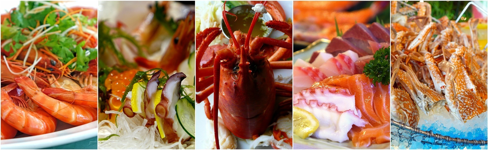
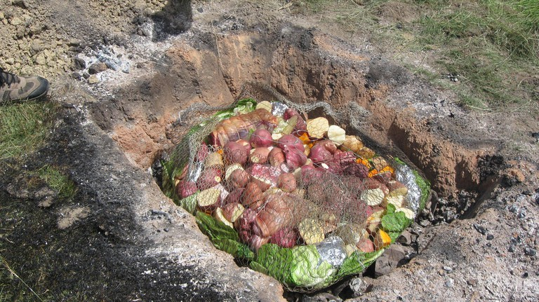

Food
The Cuisine in New Zealand is largely driven by local ingrediants and seasonal variations. The cuisine is mainly influenced by British cuisine and Maori culture.
Seafood
New Zealand has more than 14,000 kilometers of coastline so it is home to some amazing seafood. Grenn-lipped mussels, Oysters and Crayfish are some of the most sought after seafood dishes in New Zealand.
Māori hāngī
Māori hāngī is a traditional earth oven style of cooking, It is usually done on special occasions. Foods that are cooked in the hāngī are usually types of fish, meat and some vegetables. Traditionally they would wrap the food in flax leaves but now they use alluminium foil and place the food in wire baskets which are then placed on hot stones which are placed at the bottom of a man-made hole in the ground.
Pavalova
Pavalova is a famous dessert thats first recorded recipe was in New Zealand. Pavalova has become a staple dessert in New Zealand.